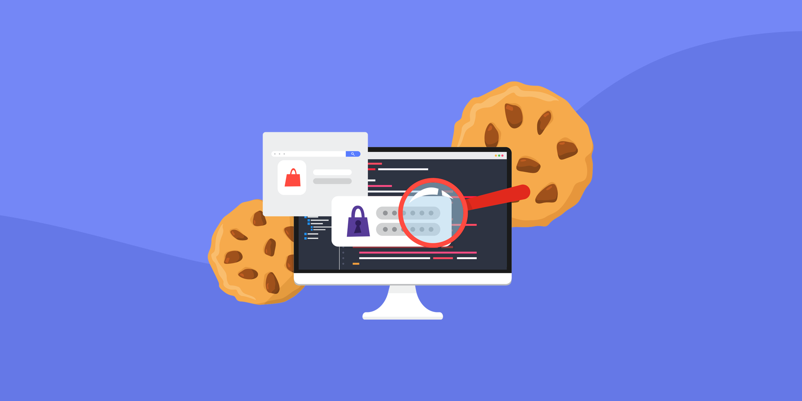
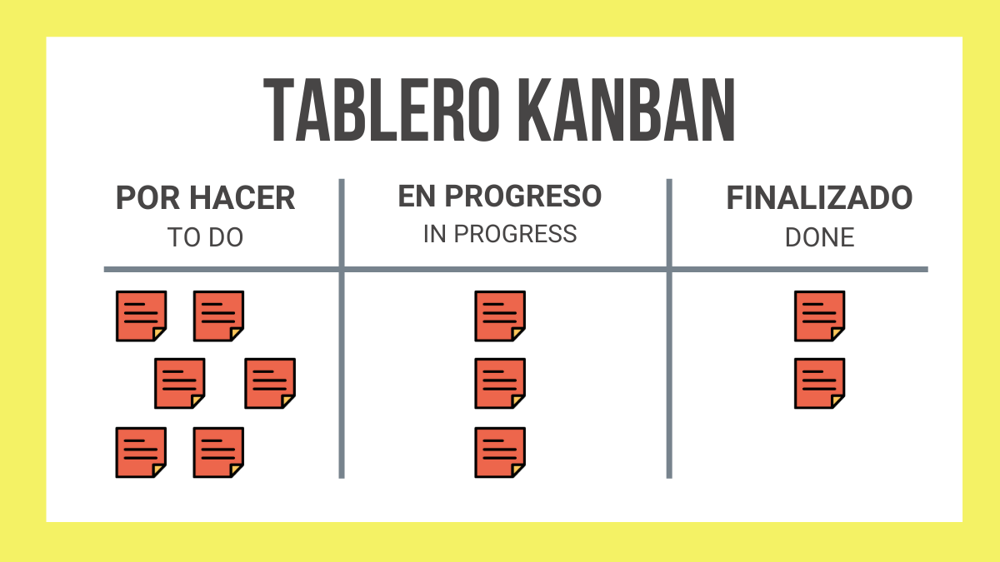

las cookies almacenan archivos de texto cifrado que contienen información sobre el usuario de un equipo cuando visita un sitio web, estas cookies permiten a los sitios web recordar informacion sobre la visita del usuario
| experiencias | aprendizaje | aporte |
|---|---|---|
| programar algunos codigos por primera vez | aprender bases de java | ayudar con programas que solucionen una probematica a la sociedad |
| usar aplicaciones de programacion | usar Apache Netbeans | ayudar con mis conocimientos |
| hacer una interfaz de una aplicacion | obtener nuevos conocimientos sobre SOFTWARE y PROGRAMACION | ayudar a Colombia a potenciarse ( cultura, tecnologia, conocimientos) |
la metodologia kanban es una herramienta utilizada en la gestion de proyectos que trata sobre un tablero que por lo general contiene 3 filas que representan diferentes estados de trabajao POR HACER: tareas que estan pendientes por hacer HACIENDO: tareas que se estan haciendo actualmente Y HECHO: tareas que ya se han completado. Esta visualizacion se hace con el fin de ayudar a visualizar el flujo de trabajo y a facilitar la gestion de las tareas, ya sea en equipo o individual
